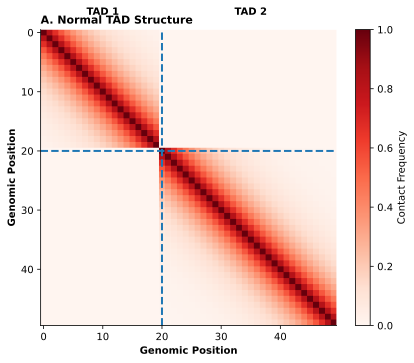
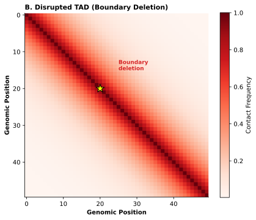
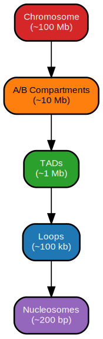
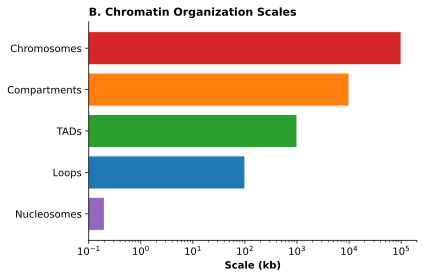
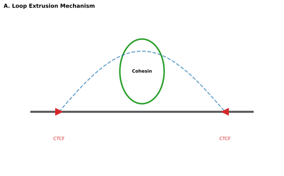
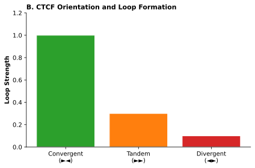
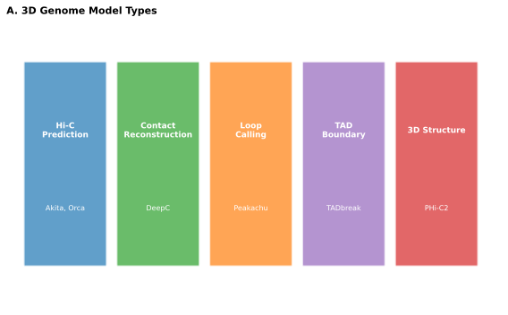
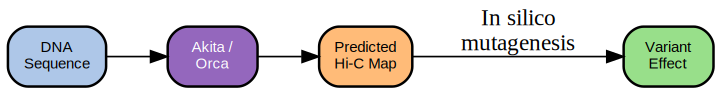
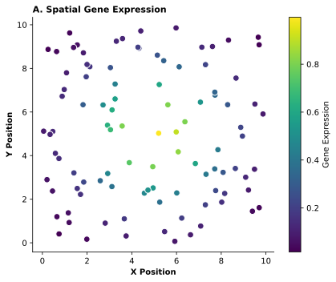
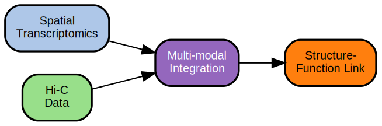

20 3D Genome Organization
Prerequisites: This chapter builds on the regulatory models introduced in Chapter 16, particularly Enformer’s approach to sequence-based prediction. Familiarity with convolutional architectures (Chapter 6) and the concept of dilated convolutions is helpful. Understanding of chromatin accessibility and histone modifications (Section 2.4) provides useful context for interpreting 3D genome features.
Learning Objectives: After completing this chapter, you should be able to:
- Explain the hierarchy of 3D genome organization from chromosome territories to fine-scale loops
- Describe the loop extrusion mechanism and predict which CTCF sites will anchor chromatin loops
- Compare and contrast Akita, Orca, and C.Origami for 3D structure prediction
- Interpret Hi-C contact matrices and understand their resolution limitations
- Explain why structural variant pathogenicity depends on 3D context, not just sequence
- Distinguish between correlational 3D structure predictions and causal regulatory effects
Key Insight: The 3D genome provides context that one-dimensional sequence models cannot capture—but 3D structure is permissive rather than deterministic. A predicted enhancer-promoter contact indicates that interaction could happen, not that it does happen or that it matters when it does.
The human genome spans approximately two meters of linear DNA, yet it must fit within a nucleus roughly ten micrometers in diameter: a compaction ratio of nearly 200,000 to one. This folding is not random. Specific sequences contact each other across vast genomic distances while others remain isolated, and these contact patterns determine which enhancers can activate which genes. An enhancer 500 kilobases from its target can drive transcription only because intervening chromatin folds to bring them into physical proximity. The regulatory models covered in Chapter 16 predict expression from sequence within a fixed window, building on the convolutional architectures introduced in Chapter 6 and treating the genome as a one-dimensional string. They cannot explain why an enhancer activates one gene and not another when multiple promoters lie within range.
Disruptions to 3D genome architecture cause disease through mechanisms that sequence alone cannot predict. When structural variants delete a boundary between chromatin domains, enhancers can contact genes they normally never reach, a phenomenon called enhancer hijacking that underlies developmental disorders and cancer. The clinical consequences depend entirely on which contacts are disrupted. A deletion that removes a domain boundary may be pathogenic; an identical-sized deletion preserving boundaries may be benign. Current variant effect prediction tools (Chapter 17) largely ignore this spatial dimension, creating systematic blind spots for structural variant interpretation.




20.1 Chromatin Organization Hierarchy
The genome folds through multiple organizational levels, each with distinct functional consequences and arising from different molecular mechanisms. Understanding this hierarchy is essential for interpreting both normal gene regulation and how structural variants cause disease. The levels are not independent; they interact in complex ways that computational models must capture to predict 3D structure accurately.
The following table summarizes the key organizational levels, their scales, and the molecular mechanisms underlying each:
| Level | Scale | Key Features | Molecular Mechanism | Computational Tractability |
|---|---|---|---|---|
| Chromosome territories | Nucleus-wide | Gene-rich toward interior | Nuclear organization | Low (difficult to predict) |
| A/B compartments | 1–10 Mb | Checkerboard pattern in Hi-C | Phase separation | Moderate (chromatin state) |
| TADs | 200 kb–2 Mb | Triangular domains, conserved boundaries | Loop extrusion | High (CTCF motifs) |
| Chromatin loops | 10–500 kb | Focal Hi-C enrichments | CTCF/cohesin | High (convergent motifs) |
20.1.1 Chromosome Territories and Compartments
At the largest scale, chromosomes occupy distinct nuclear volumes called chromosome territories. Gene-rich chromosomes tend toward the nuclear interior while gene-poor chromosomes associate with the nuclear periphery. This territorial organization limits which chromosomes can exchange material during translocations: recurrent cancer-associated translocations occur preferentially between chromosomes that occupy neighboring territories [Citation Needed]. While chromosome territory organization has clear functional implications, most computational models focus on finer-scale structures where sequence determinants are more tractable.
Within chromosome territories, chromatin partitions into two major compartment types distinguished by their transcriptional activity and chromatin state. A compartments contain gene-rich, transcriptionally active chromatin with open, accessible structure. B compartments contain gene-poor, transcriptionally silent regions often associated with the nuclear lamina at the nuclear periphery. This compartmentalization is visible in Hi-C contact maps as a characteristic checkerboard pattern: A compartment regions preferentially contact other A regions even when separated by megabases, while B regions contact other B regions [Citation Needed]. Compartment identity correlates strongly with histone modifications (H3K27ac marks active A compartments; H3K9me3 marks repressive B compartments) and changes during cellular differentiation as lineage-specific genes shift between active and inactive states. The molecular mechanism underlying compartmentalization appears to involve phase separation: regions with similar chromatin states aggregate through weak multivalent interactions, creating nuclear microenvironments with distinct biochemical properties [Citation Needed].
20.1.2 Topologically Associating Domains
Below the megabase scale of compartments, the genome organizes into topologically associating domains (TADs): sub-megabase regions (median approximately 800 kilobases in mammals) within which sequences contact each other more frequently than with sequences outside the domain. TAD boundaries appear as sharp transitions in contact frequency, visible in Hi-C maps as triangular domains along the matrix diagonal. These boundaries show strong conservation across mammalian species and across cell types within a species, suggesting strong selective pressure to maintain domain organization [Citation Needed]. The prevailing model holds that TADs constrain enhancer-promoter interactions: regulatory elements within a TAD can contact genes in the same domain, but boundaries prevent crosstalk with genes in adjacent domains. This insulation function has clear clinical relevance. Deletions that remove TAD boundaries allow enhancers to contact genes they normally cannot reach. In a well-characterized example, deletions removing the boundary between the EPHA4 locus and the WNT6/PAX3 region allow limb enhancers to ectopically activate WNT6, causing brachydactyly and other limb malformations (Lupiáñez et al. 2015).
Consider an enhancer located exactly at the center of a TAD. If this TAD contains three genes—one near each boundary and one near the center—which genes would you expect the enhancer to regulate? How would your prediction change if the enhancer were located near one of the TAD boundaries instead?
20.1.3 Loop Extrusion Mechanism
The molecular basis of TAD formation is now well understood through the loop extrusion model. The cohesin protein complex loads onto chromatin and extrudes DNA bidirectionally, progressively enlarging the extruded loop until it encounters an obstacle. The key obstacle is CTCF protein bound to DNA in a specific orientation. When cohesin encounters CTCF sites oriented toward each other (convergent orientation), extrusion halts and a stable loop forms with the convergent CTCF sites at the loop anchors [Citation Needed]. This model explains several key observations: TAD boundaries are enriched for CTCF binding sites; CTCF motif orientation predicts which sites will anchor loops (convergent pairs form loops while divergent pairs do not); and acute degradation of cohesin eliminates TADs within hours while leaving compartments intact [Citation Needed]. The distinction between compartment and TAD formation mechanisms has important implications for prediction. Models that capture CTCF binding and orientation can predict TAD boundaries; predicting compartments requires learning different sequence features associated with chromatin state.
The orientation rule for CTCF is a powerful predictor: convergent CTCF pairs (pointing toward each other: \(\rightarrow \leftarrow\)) form stable loop anchors, while divergent pairs (\(\leftarrow \rightarrow\)) and tandem pairs (\(\rightarrow \rightarrow\)) do not. This simple rule, which arises from the loop extrusion mechanism, allows computational models to predict many TAD boundaries directly from sequence.
20.1.4 Fine-Scale Chromatin Loops
At the finest scale, chromatin forms specific loops between defined loci. Enhancer-promoter loops bring distal regulatory elements into physical proximity with their target genes, while structural loops between convergent CTCF sites establish the TAD framework. Most enhancer-promoter contacts span less than 200 kilobases, but some extend over a megabase [Citation Needed]. Detecting these fine-scale contacts requires high-resolution data; the Micro-C method uses micrococcal nuclease digestion to achieve nucleosome-level resolution, revealing contact patterns invisible in standard Hi-C [Citation Needed]. The functional significance of individual loops remains debated. Some loops appear essential for gene activation; others may be structural features without direct regulatory consequences.








20.2 Measuring the 3D Genome
Predicting 3D genome structure requires training data: measurements of which sequences contact which other sequences in real cells. Chromosome conformation capture methods provide these measurements through a common biochemical principle, though the technologies vary in resolution, throughput, and the aspects of 3D organization they reveal.
20.2.1 Hi-C and Contact Matrices
This section describes the biochemistry and normalization of Hi-C data. Understanding these technical details helps explain why training data resolution varies and why certain biases must be corrected. Readers primarily interested in computational prediction can focus on the key point: Hi-C produces a symmetric contact matrix where values represent how frequently two genomic regions were spatially close in the cell population.
Cells are crosslinked with formaldehyde to freeze chromatin contacts in place; DNA is digested with restriction enzymes; free DNA ends are ligated, preferentially joining fragments that were spatially proximate; and the ligated junctions are identified through sequencing. The frequency of junction reads between two genomic regions reflects how often those regions were in physical contact across the cell population.
Hi-C extends this principle genome-wide by incorporating biotinylated nucleotides at ligation junctions, enabling purification of chimeric fragments from the entire genome [Citation Needed]. The output is a contact matrix where rows and columns represent genomic bins (typically 1 to 50 kilobases depending on sequencing depth) and values represent contact frequencies between bin pairs. Resolution depends directly on sequencing depth: achieving 1 kilobase resolution requires billions of reads, while 10 kilobase resolution requires hundreds of millions. Raw contact frequencies require extensive normalization to correct for biases from GC content, restriction site density, and mappability. The ICE (iterative correction and eigenvector decomposition) method and related approaches remove these technical artifacts while preserving biological signal [Citation Needed]. The training strategies that enable models to learn from these normalized contact matrices follow the multi-task principles introduced in Section 8.6.
The contact matrix encodes all levels of chromatin organization. Compartments appear as the checkerboard pattern when viewing megabase-scale interactions; TADs appear as triangular domains of enriched contacts along the diagonal; and loops appear as focal enrichments at specific off-diagonal positions. The matrix is dominated by the polymer effect: sequences that are close in linear distance contact each other frequently regardless of specific 3D structure, creating strong signal along the diagonal that can obscure biologically meaningful contacts at greater distances.
20.2.2 Resolution and Data Resources
Beyond standard Hi-C, several technologies address specific limitations:
| Technology | Resolution | Throughput | Key Advantage | Key Limitation |
|---|---|---|---|---|
| Hi-C | 1–50 kb | High | Genome-wide, well-established | Limited by restriction sites |
| Micro-C | ~100 bp | Moderate | Nucleosome-level resolution | Higher cost, fewer datasets |
| Single-cell Hi-C | Variable | Low | Cell-to-cell variation | Extremely sparse matrices |
| DNA FISH | Single locus | Low | Direct visualization | Low throughput |
| Capture Hi-C | 1–5 kb | Moderate | High resolution at targets | Limited to predetermined loci |
Micro-C achieves nucleosome-level resolution by using micrococcal nuclease instead of restriction enzymes, revealing fine-scale contact patterns invisible at standard Hi-C resolution [Citation Needed]. Single-cell Hi-C measures contacts in individual cells, revealing that any two loci contact each other in only 5 to 15 percent of cells, but the resulting matrices are extremely sparse (most possible contacts are unmeasured in any single cell) [Citation Needed]. Imaging methods such as DNA FISH directly visualize genomic loci in the nucleus, providing ground truth for computational predictions but at much lower throughput than sequencing-based approaches.
Training data for 3D prediction models comes primarily from a small number of well-characterized cell lines. The lymphoblastoid cell line GM12878 and the leukemia cell line K562 have deep Hi-C coverage across multiple laboratories, making them the default training sets for most models. Primary tissues and rare cell types have sparse coverage, creating a significant gap between where models are trained and where clinical applications require predictions. The 4D Nucleome Data Portal and ENCODE provide the most comprehensive repositories of 3D genome data, though coverage remains heavily biased toward common cell lines and human samples. This data landscape parallels the challenges discussed for functional genomics data more broadly (Chapter 2).
A researcher wants to study enhancer-promoter contacts at a specific gene locus implicated in a rare disease. The target region spans 500 kb. Given the technologies described above, which approach would you recommend, and why? What would be the key limitation of your recommended approach?
20.3 Predicting 3D Structure from Sequence
Sequence-based prediction of 3D genome structure asks whether DNA sequence alone contains sufficient information to predict chromatin contacts. The success of models like Akita, Orca, and C.Origami demonstrates that sequence encodes substantial 3D information, particularly for TAD boundaries and CTCF-anchored loops. These models share a common challenge: predicting a two-dimensional contact matrix from a one-dimensional sequence input.
20.3.1 Akita and Dilated Convolutions
Akita, introduced by Fudenberg et al. in 2020, established the paradigm for sequence-to-contact prediction (Fudenberg, Kelley, and Pollard 2020). The model takes approximately one megabase of DNA sequence as input and predicts Hi-C contact frequencies at 2 kilobase resolution. The architecture uses dilated convolutions to expand the receptive field without proportionally increasing parameters (an approach discussed in detail in Section 6.5.1), enabling the model to integrate information across the full input window. The output is symmetric (contacts between positions i and j equal contacts between j and i), which the architecture enforces through appropriate pooling operations. Akita achieves correlation coefficients of 0.6 to 0.8 between predicted and observed contact maps in held-out genomic regions, successfully identifying TAD boundaries and major loop anchors.
20.3.2 Orca and Multiscale Prediction
Orca extends sequence-based prediction to multiple resolutions simultaneously (Zhou 2022). Rather than predicting a single-resolution contact map, Orca generates predictions at 4, 8, 16, 32, 64, 128, and 256 kilobase resolutions, capturing both fine-scale loops and large-scale compartment structure. The multiscale approach addresses a fundamental challenge: compartments span megabases while loops span kilobases, and no single resolution optimally captures both. Orca’s architecture processes sequence through parallel pathways tuned to different scales, then combines predictions into a coherent multiscale representation. This design enables prediction of structural variants’ effects across organizational levels, from disrupted loops to altered compartment boundaries.
20.3.3 C.Origami and Cross-Cell-Type Transfer
C.Origami addresses the cell-type specificity problem (Tan et al. 2023). While TAD boundaries are largely conserved across cell types, finer-scale contacts vary substantially. C.Origami incorporates CTCF ChIP-seq data alongside sequence, enabling the model to learn how cell-type-specific CTCF binding patterns shape cell-type-specific contact maps. This design enables transfer learning: train on cell types with both Hi-C and CTCF data, then predict contacts in new cell types using only CTCF ChIP-seq. The approach substantially expands the range of cell types where 3D predictions are possible, since CTCF ChIP-seq is available for many more cell types than deep Hi-C. This transfer strategy echoes the broader transfer learning principles discussed in Chapter 9.
The following table compares these three foundational 3D prediction models:
| Feature | Akita | Orca | C.Origami |
|---|---|---|---|
| Input | Sequence only | Sequence only | Sequence + CTCF ChIP-seq |
| Context length | ~1 Mb | ~1 Mb | ~1 Mb |
| Output resolution | 2 kb | 4–256 kb (multiscale) | Variable |
| Architecture | Dilated CNN | Multiscale CNN | CNN with auxiliary input |
| Cell-type transfer | Limited | Limited | Enabled via CTCF data |
| Key strength | Established paradigm | Multiscale prediction | Cross-cell-type transfer |
| Key limitation | Single cell type | Requires Hi-C training | Requires CTCF ChIP-seq |
Consider the tradeoff between Akita’s sequence-only approach and C.Origami’s requirement for CTCF ChIP-seq data. In what scenarios would each approach be preferred? Think about (1) predicting structural variant effects, (2) predicting contacts in a novel cell type, and (3) understanding what sequence features determine 3D structure.
20.3.4 Learned Sequence Determinants
Interpretability analysis reveals what these models learn about sequence determinants of 3D structure. Attribution methods (discussed more fully in Chapter 25) consistently identify CTCF motifs as the strongest predictors of contact patterns, with convergent CTCF pairs (motifs oriented toward each other) most strongly associated with loop anchors. Transcription start sites contribute to boundary predictions, consistent with the observation that active promoters often coincide with domain edges. GC content correlates with compartment identity (GC-rich regions tend toward A compartment), and repetitive element composition shows systematic associations (LINE elements with B compartment; Alu elements with A compartment) [Citation Needed]. The orientation rule for CTCF emerges naturally from training: models learn that CTCF motif orientation, not just presence, predicts which sites will anchor loops. This learned relationship matches the mechanistic understanding from the loop extrusion model, providing validation that models capture biologically meaningful features.
Despite these advances, significant limitations remain. Resolution is constrained by training data; predicting nucleosome-level contacts requires Micro-C training data that exists for few cell types. The single-cell variation problem is fundamental: models trained on bulk Hi-C predict population averages, but gene regulation may depend on the stochastic 3D configurations in individual cells. Causality cannot be established from prediction alone; a model may correctly predict that two regions contact each other without revealing whether that contact causes any functional consequence. Generalization to cell types distant from training data remains uncertain, and the computational cost of processing megabase sequences limits practical applications for genome-wide analysis.




20.4 3D Structure and Gene Regulation
The ultimate purpose of 3D genome prediction is understanding gene regulation. Contact maps matter because they reveal which enhancers can reach which genes. Integrating 3D structure with expression prediction addresses limitations that purely one-dimensional models cannot overcome.
20.4.1 Beyond One-Dimensional Models
Enformer (Section 16.2) predicts gene expression from sequence within a 200 kilobase window, sufficient to capture many enhancer-promoter relationships but fundamentally limited by its treatment of the genome as a one-dimensional string. This representation cannot distinguish an enhancer that loops to a distant gene from one blocked by a TAD boundary, nor can it explain cell-type-specific contacts that activate different genes from the same enhancer in different contexts. The 3D genome provides this missing context: physical proximity through chromatin loops determines which regulatory elements can communicate.
Consider an enhancer located 300 kilobases from two genes, one upstream and one downstream. Linear models would predict similar regulatory influence on both genes based on comparable distances. But if a TAD boundary lies between the enhancer and the upstream gene, 3D structure predicts that only the downstream gene receives regulatory input. The boundary insulates the upstream gene from enhancer activity regardless of linear proximity. This insulation function explains why TAD boundaries show such strong evolutionary conservation: disrupting boundaries allows regulatory crosstalk that can dysregulate gene expression with pathogenic consequences.
Linear distance is not regulatory distance. An enhancer 500 kb away within the same TAD may have stronger regulatory influence than an enhancer 50 kb away across a TAD boundary. This principle explains why structural variants can be pathogenic even when they do not disrupt any coding sequence—they rewire the regulatory topology.
20.4.2 Structural Variant Interpretation
The clinical significance is clearest in structural variant interpretation. Deletions that remove TAD boundaries cause enhancer hijacking, where regulatory elements gain access to genes in adjacent domains. The EPHA4 locus provides the canonical example: limb enhancers normally activate EPHA4 expression in developing limbs. When deletions remove the TAD boundary separating EPHA4 from the adjacent WNT6/PAX3 domain, these enhancers ectopically activate WNT6, causing limb malformations including brachydactyly and polydactyly (Lupiáñez et al. 2015). Different deletion sizes produce different phenotypes depending on which boundaries are removed and which new enhancer-gene contacts form. Similar mechanisms operate in cancer, where structural variants create novel enhancer-oncogene contacts that drive tumor growth [Citation Needed]. The diagnostic challenge is substantial: predicting pathogenicity of structural variants requires understanding which 3D contacts will be disrupted and what new contacts will form, predictions that sequence-only models cannot provide. This challenge intersects with the variant prioritization pipelines discussed in Chapter 28, where 3D genome effects represent a systematic blind spot in current foundation model approaches to variant effect prediction (Chapter 17).
When analyzing structural variants for potential pathogenicity:
- Identify nearby TAD boundaries using available Hi-C data or boundary predictions from Akita/Orca
- Check for boundary disruption: Does the structural variant delete, invert, or translocate a boundary?
- Inventory regulatory elements: What enhancers exist in the affected region? What genes lie in adjacent TADs?
- Consider tissue specificity: The consequence depends on which cell types express the relevant enhancers and target genes
- Compare to known cases: Databases of pathogenic structural variants with 3D mechanism provide precedent
Structural variants that disrupt boundaries are more likely to be pathogenic than those preserving domain structure, even if the latter remove more sequence.
Integrating 3D predictions with expression models remains technically challenging. Hybrid approaches use predicted contacts to weight enhancer contributions: rather than treating all enhancers within a window equally, weights reflect predicted contact frequency with the target promoter. This activity-by-contact framework (expression proportional to the sum of enhancer activities weighted by contact frequencies) captures some of the regulatory logic that 1D models miss [Citation Needed]. Graph-based representations (Chapter 22) can encode genes and enhancers as nodes with contacts as edges, enabling graph neural networks to reason about regulatory relationships in 3D space. Attribution methods for understanding which contacts drive expression predictions are examined in Section 25.1. End-to-end training of combined 3D and expression models remains difficult; most current approaches train the components separately and combine predictions post hoc.
20.4.3 Causality and Permissive Architecture
The causality question complicates interpretation. Do enhancer-promoter contacts cause gene activation, or does gene activation cause contacts? Transcription itself can influence chromatin organization: active transcription may stabilize enhancer-promoter contacts that would otherwise be transient [Citation Needed]. Perturbation experiments provide cleaner causal tests than correlational analysis. Acute degradation of cohesin eliminates TADs within hours, yet most genes show minimal expression changes, suggesting that many TAD structures are permissive rather than deterministic for gene regulation [Citation Needed]. CRISPR-based deletion of specific TAD boundaries similarly produces more modest effects than the structural disruption would suggest [Citation Needed]. The emerging view is nuanced: 3D structure constrains which enhancer-promoter interactions are possible, but whether those interactions occur depends on additional factors including transcription factor availability and chromatin state. This distinction between correlation and causation echoes the confounding challenges discussed in Chapter 12 and the causal inference principles explored in Chapter 26.
A recent paper reports that deleting a TAD boundary experimentally results in new chromatin contacts between an enhancer and a previously insulated gene, but the gene’s expression does not change. How would you interpret this result? What additional experiments would help distinguish between (a) the contact is non-functional, (b) the contact is functional but opposed by other regulatory mechanisms, and (c) the contact requires additional factors not present in this experimental system?
20.5 Spatial Transcriptomics
Single-cell RNA sequencing (Chapter 19) reveals cellular heterogeneity but discards spatial information: we learn which genes each cell expresses but not where that cell sits within the tissue. For understanding tumor microenvironments, developmental gradients, or tissue architecture, spatial context is essential. A T cell adjacent to a tumor cell experiences a different microenvironment than one in the surrounding stroma, and this spatial context shapes gene expression programs in ways that dissociated single-cell data cannot capture.
20.5.1 Measurement Technologies
Spatial transcriptomics technologies fall into two broad categories with complementary strengths. Spot-based methods like Visium (10x Genomics) capture polyadenylated RNA at arrayed positions on a slide, providing transcriptome-wide measurement at approximately 55 micrometer resolution (typically 1 to 10 cells per spot). These methods offer comprehensive gene coverage but limited spatial resolution. Imaging-based methods like MERFISH use sequential rounds of fluorescent hybridization to identify RNA molecules in situ, achieving subcellular resolution but limited to pre-selected gene panels (hundreds to thousands of genes rather than transcriptome-wide) [Citation Needed]. Newer technologies like Stereo-seq achieve near-cellular resolution with transcriptome-wide coverage through spatial barcoding, though they remain less validated than established methods [Citation Needed].
| Approach | Resolution | Gene Coverage | Example Technologies | Best For |
|---|---|---|---|---|
| Spot-based | ~55 um (multi-cell) | Transcriptome-wide | Visium, Slide-seq | Discovery, whole-transcriptome |
| Imaging-based | Subcellular | 100–10,000 genes | MERFISH, Xenium | Targeted, single-cell resolution |
| Next-generation | Near-cellular | Transcriptome-wide | Stereo-seq, Seq-Scope | Emerging applications |
20.5.2 Computational Challenges
Computational challenges in spatial transcriptomics mirror and extend those in single-cell analysis (Chapter 19). Spot deconvolution addresses the multiple-cells-per-spot problem in Visium data: inferring the cell type composition within each spot by comparing spot expression profiles to reference single-cell atlases. Imputation methods predict expression of genes not measured in imaging-based assays, leveraging correlations learned from reference datasets. Integration aligns spatial data with single-cell references, mapping reference cell types onto spatial coordinates. Domain correction handles batch effects that manifest in spatial patterns as well as expression levels. The sparsity problem is even more severe than in standard single-cell RNA sequencing; gene detection rates in spatial methods often fall below 10 percent [Citation Needed]. The missing modality strategies developed for multi-omics integration (Section 22.6) become essential when spatial methods fail to detect genes that single-cell RNA-seq measures reliably.
20.5.3 Spatial Foundation Models
Spatial foundation models remain much less mature than sequence-based models (Chapter 14, Chapter 15). The fundamental challenge is the lack of an equivalent to evolutionary pretraining: DNA and protein models learn from billions of years of evolutionary experiments encoded in sequence databases, but no comparable natural augmentation exists for spatial organization. Current approaches include graph neural networks that encode spatial relationships as edges between neighboring cells or spots, transformer architectures that treat spatial positions as tokens with positional encodings derived from coordinates, and generative models that learn spatial patterns from atlases of reference tissues. Models like Nicheformer apply transformer architectures to spatial niches (local cellular neighborhoods), learning representations that capture cell-cell communication patterns and tissue microenvironment signatures [Citation Needed]. SpaGCN uses graph convolutional networks with spatial graphs, propagating information between spatially adjacent regions to identify spatial domains with coherent expression patterns [Citation Needed].
Other approaches address different aspects of the spatial modeling problem. CellPLM pretrains on millions of spatial transcriptomics cells, learning representations that transfer across tissue types and experimental platforms [Citation Needed]. STACI combines spatial coordinates with morphological features from histology images, enabling joint reasoning about molecular and visual tissue properties [Citation Needed]. GraphST uses graph attention networks to propagate expression signals across spatial neighborhoods while preserving local heterogeneity [Citation Needed]. These methods remain early in development compared to sequence foundation models; no spatial equivalent of DNABERT or ESM-2 has achieved broad adoption, and benchmark comparisons across methods remain limited by the diversity of spatial platforms and tissue types.




The clinical applications motivating spatial foundation model development center on tumor microenvironment characterization. The spatial organization of immune cells relative to tumor cells predicts treatment response: tumors with immune cells infiltrating the tumor core respond better to immunotherapy than those with immune exclusion at the tumor periphery [Citation Needed]. Spatial models aim to learn these prognostic patterns from training data, enabling prediction of treatment response from spatial organization alone. Similar applications exist in developmental biology (understanding morphogen gradients and cell fate decisions), neuroscience (mapping brain region organization), and pathology (characterizing disease architecture in tissue sections).
20.6 Limitations and Open Questions
Current 3D genome and spatial models face limitations that constrain their utility for clinical and research applications. Resolution remains a fundamental constraint: most Hi-C prediction models operate at 2 to 10 kilobase resolution, while functionally relevant enhancer-promoter contacts involve specific sequences within those bins. Predicting which specific kilobases within a TAD contact each other requires resolution that exceeds current training data in most cell types. The resolution needed for accurate prediction may exceed the resolution achievable from bulk Hi-C, creating a data ceiling that computational methods cannot overcome.
The population averaging problem is more fundamental than a mere technical limitation. Bulk Hi-C measurements average over millions of cells, each with a different 3D configuration. Any two loci contact each other in only a minority of cells at any given time, yet the averaged contact frequency appears as a single value in the training data. Single-cell Hi-C reveals this heterogeneity but produces extremely sparse data (most possible contacts unmeasured in each cell). Models trained on population averages cannot predict single-cell behavior, yet gene regulation may depend on the stochastic dynamics of contact formation in individual cells. Whether the population average or the single-cell distribution matters more for predicting gene expression remains unclear.
Causality represents the deepest conceptual challenge. Predicting that two regions contact each other does not establish that the contact causes any biological consequence. Many TAD disruptions produce minimal expression changes; many enhancer-promoter contacts may be bystanders rather than drivers of transcription. The loop extrusion machinery that creates TADs operates continuously, but the transcriptional machinery that reads out enhancer-promoter communication operates on different timescales and with different requirements. Computational predictions of 3D structure are correlational; establishing which predicted contacts matter functionally requires experimental validation that computational methods cannot replace.
For clinical applications, the sparse training data creates systematic blind spots. Models trained on GM12878 and K562 may not transfer to the primary cells, developmental stages, or disease states where predictions matter most. A structural variant affecting 3D organization in neural progenitor cells cannot be reliably interpreted using models trained only on lymphoblastoid cells. The cell types most relevant for clinical interpretation are often those with the least 3D characterization data available. This challenge parallels the transferability concerns discussed throughout Chapter 11 and Chapter 12.
Summarize three distinct limitations of current 3D genome prediction models. For each limitation, identify whether it is primarily (a) a data limitation that more sequencing could address, (b) a fundamental biological challenge, or (c) a computational/algorithmic limitation. How do these limitations affect the clinical utility of 3D structure predictions?
20.7 Structure as Context, Not Cause
The genome’s three-dimensional organization provides context that one-dimensional sequence models cannot capture. Enhancer-promoter contacts explain regulatory relationships spanning hundreds of kilobases; TAD boundaries constrain which elements can interact; tissue architecture determines the cellular neighborhoods where gene expression programs execute. Models like Akita, Orca, and C.Origami demonstrate that sequence contains substantial information about chromatin folding, predicting contact maps from DNA sequence with accuracy sufficient to identify structural variants and disease-associated changes.
Yet the functional role of 3D structure remains more modest than early enthusiasm implied. Experimental perturbation studies show that TAD boundary disruption often has limited expression consequences [Citation Needed]. Many chromatin contacts appear permissive rather than instructive: they establish the possibility of regulatory communication without determining whether that communication occurs. A predicted enhancer-promoter contact indicates that interaction could happen, not that it does happen or that it matters when it does. The 3D genome may constrain the regulatory landscape without specifying regulatory outcomes.
3D structure is permissive, not deterministic. Think of TADs as enabling rather than commanding: they create the possibility of enhancer-promoter communication, but the actual communication requires transcription factors, chromatin accessibility, and other regulatory inputs. This is why disrupting a TAD boundary can cause disease (by enabling pathogenic new contacts) without boundary integrity being necessary for normal gene expression in most cases.
This distinction shapes how 3D structure should be integrated with other modalities. Chromatin contacts become edges in gene regulatory networks (Chapter 22), providing structural priors for graph-based reasoning. Spatial expression patterns integrate with multi-omics approaches (Chapter 22), adding tissue architecture alongside genomics and transcriptomics. For interpretability (Chapter 25), 3D structure offers mechanistic hypotheses that require experimental validation. Whether a predicted regulatory effect operates through chromatin proximity, or whether proximity merely correlates with regulation through shared causes, remains a question that computational models can motivate but not answer. The integration of 3D information into genomic AI proceeds with appropriate uncertainty about what that information contributes.
Key Concepts Covered:
- Chromatin organization hierarchy: Chromosome territories, A/B compartments, TADs, and fine-scale loops represent nested organizational levels with distinct mechanisms
- Loop extrusion model: Cohesin extrudes DNA until blocked by convergent CTCF sites, explaining TAD boundary formation
- Hi-C and contact matrices: Chromosome conformation capture methods measure 3D contacts; resolution depends on sequencing depth
- Sequence-based prediction: Akita, Orca, and C.Origami predict contact maps from sequence, achieving ~0.6-0.8 correlation with experimental data
- Structural variant interpretation: Boundary disruption causes enhancer hijacking with pathogenic consequences
- Spatial transcriptomics: Extends single-cell analysis to include tissue location, enabling microenvironment characterization
Core Takeaways:
- The 3D genome provides regulatory context that 1D models cannot capture—linear distance is not regulatory distance
- CTCF motif orientation is a powerful predictor of loop anchors: convergent pairs form loops, divergent pairs do not
- Sequence contains substantial 3D information, but prediction accuracy varies by organizational level (best for TAD boundaries, worst for compartments)
- 3D contacts are permissive rather than deterministic—contact predicts that regulation could occur, not that it does
- Clinical application to structural variants is limited by training data bias toward a few cell lines
Connections to Other Chapters:
- Builds on: Chapter 6 (dilated convolutions), Chapter 16 (Enformer and 1D models)
- Extends to: Chapter 22 (3D contacts as graph edges), Chapter 22 (spatial integration)
- Relevant evaluation: Chapter 11 (transfer evaluation), Chapter 25 (attribution methods)
- Clinical context: Chapter 17 (variant effect prediction gaps), Chapter 28 (structural variant interpretation)